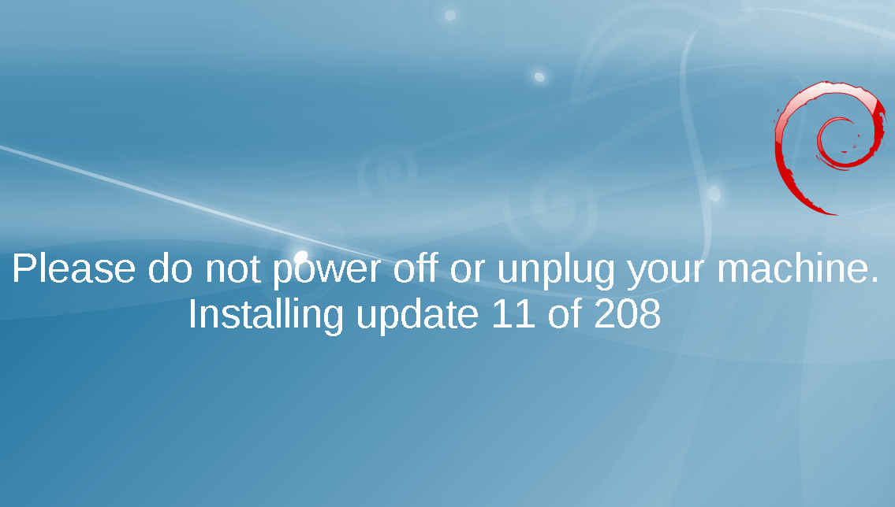

08/21/18

Узнал пару "фишек" администрирования серверов, спешу поделиться.
На самом деле, автоматизацией обновления, в стиле Microsoft, мы, конечно, заниматься не будем.
Иначе, рискуем прийти к схожим результатам: обновили систему в автомате ночью, а там что-то
не запустилось, и кто-нибудь вынужден остаться без здорового крепкого сна.
Вместо этого, мы настроим:
Continue reading »
06/03/18
Эх.. Давненько я уже ничего не писал. Сложное это дело писать на естественных языках.
Толи дело на языках программирования! :-) Жаль что NDA часто не даёт выкладывать
шедевры на всеобщее обозрение. Иногда чуствуешь себя поэтом продающим свой талант.
Ну, довольно лирики! Сегодня хочу поделиться простым решением отказоустойчивой
отправки почты с использованием …
Continue reading »
02/11/17
Прошло уже около года как я открыл для себя менеджер версий python - pyenv.
Теперь даже сложно представить как мне не надоедало вручную устанавливать python всякий
раз когда понадобится новая версия (отличная от распространяемой в репозиториях debian).
Не говоря уже о том, что действия приходилось повторять, при выкатывании нового проекта
на …
Continue reading »